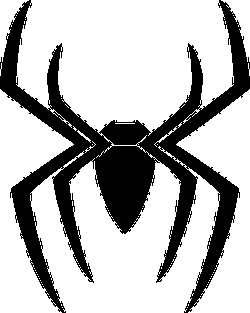
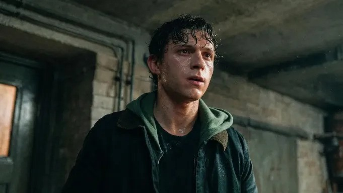
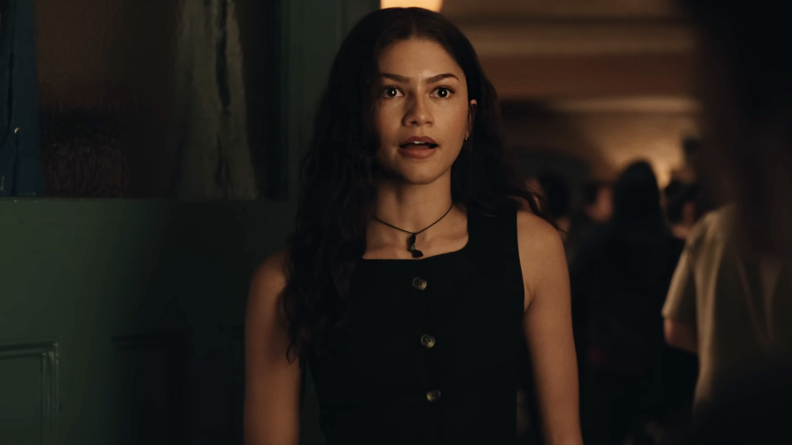
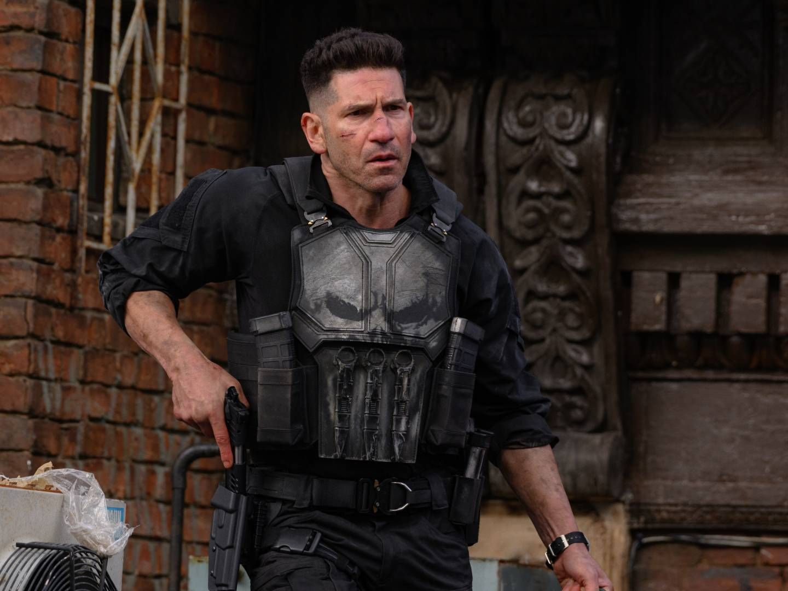
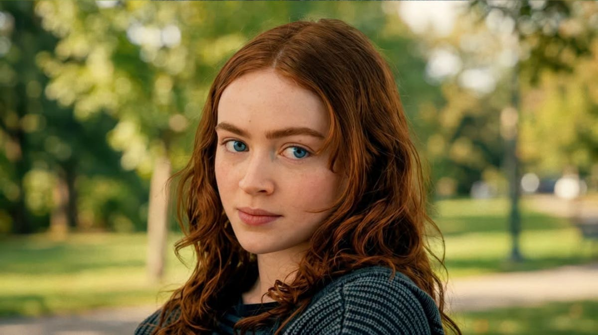
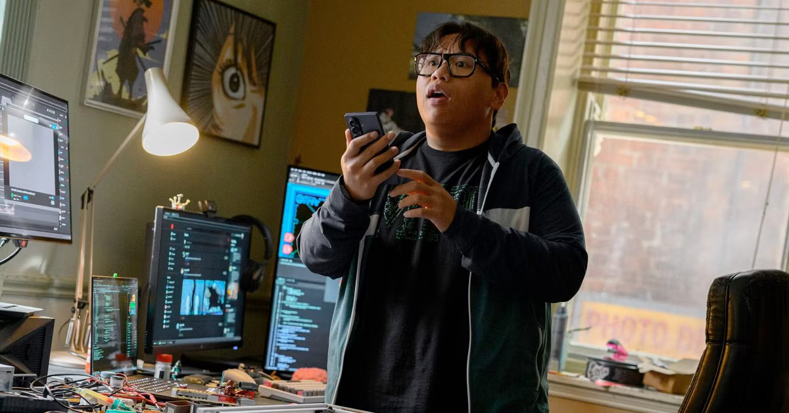

| Images: | Character: | Played by: | Description: |
|---|---|---|---|
 | Peter Parker/Spider-Man | Tom Holland | Peter Parker, now living without the people who once knew him, has dedicated himself to fighting crime full-time as Spider-Man. As a new threat emerges, Peter faces a transformation that could change his life and his role as Spider-Man. |
 | MJ Watson | Zendaya | MJ is someone from Peter Parker's past who has moved on with her life after losing her memories of him. Her place in Peter's life remains important as he continues living as Spider-Man without the people he once knew. |
 | Frank Castle/The Punisher | John Bernthal | Frank Castle, known as the Punisher, is a vigilante who uses his combat skills and ruthless methods to fight criminals. In Brand New Day, he becomes involved in Spider-Man's latest conflict. |
 | Jean Grey | Sadie Sink | Jean Grey is a powerful mutant with telepathic and telekinetic abilities. Her intelligence and control over her powers make her one of the most formidable characters in the story. |
| Bruce Banner/The Hulk | Mark Ruffalo | Bruce Banner is a brilliant scientist who lives with the ability to transform into the incredibly powerful Hulk. His strength and experience make him an important figure when Spider-Man faces new challenges. | |
 | Ned Leeds | Jacob Batalon | Ned Leeds is Peter Parker’s longtime best friend, but after the events that caused everyone to forget Peter, Ned no longer remembers him. Despite this, he remains an important part of Peter’s past and the life he once had. |